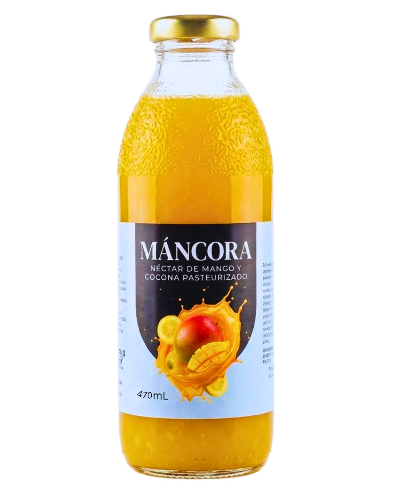

MÁNCORA
Exótica y exquisita combinación de mango y cocona seleccionados, diseñada para ofrecer una experiencia tropical inigualable y un balance premium de frescura.

Ingredientes y Formulación Técnica
Cocona
Pulpa Base Tropical
Mango
Pulpa de Selección
Agua Tratada
Relación Pulpa:Agua
Azúcar Rubia
12° Brix
CMC
Estabilizante (0.1%)
Conservante
Sorbato de Potasio (0.025%)
Ácido Cítrico
Regulador de pH (0.1%)
Beneficios
Sin Colorantes
Sin Saborizantes
Pulpa Natural
Pasteurizado
Proceso de Ingeniería Lineal
Recepción de Materia
Inspección de mangos y coconas maduras para descartar unidades magulladas o no aptas.
Lavado por Inmersión
Remoción profunda de impurezas externas mediante chorros de agua a presión y agitación.
Desinfección Química
Tratamiento controlado en solución clorada para reducir la carga microbiana superficial.
Acondicionamiento
Pelado manual y mecánico para retirar la corteza de la cocona y la piel del mango.
Despulpado y Filtrado
Licuado industrial y tamizado para separar las semillas, obteniendo una pulpa fina y homogénea.
Pesaje y Proporción
Control volumétrico estricto de las pulpas para asegurar la repetibilidad del sabor tropical.
Estandarización Brix
Dilución exacta con agua tratada y aditivos permitidos hasta calibrar el néctar a 12° Brix.
Pasteurización Térmica
Calentamiento constante a 80°C durante 30 segundos para inactivar enzimas y levaduras.
Envasado en Caliente
Llenado inmediato en botellas a una temperatura superior a 75°C para asegurar el vacío.
Choque e Inversión
Posicionamiento boca abajo por 2 min para esterilizar la tapa, seguido de enfriamiento a 4°C.